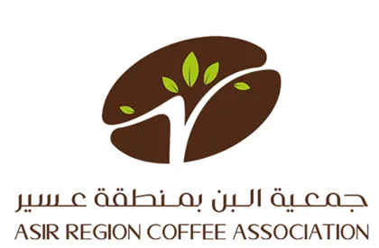
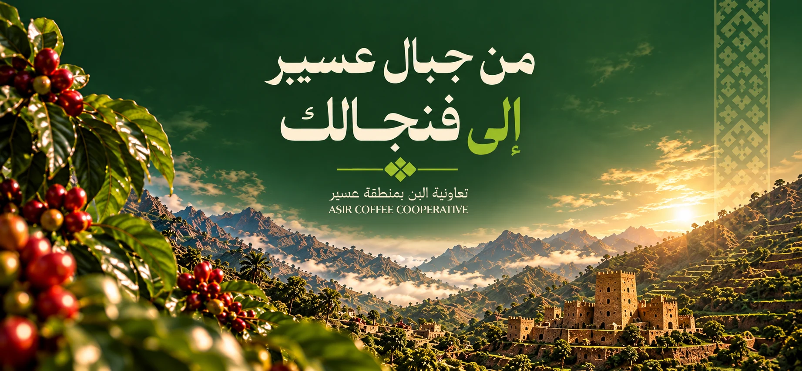
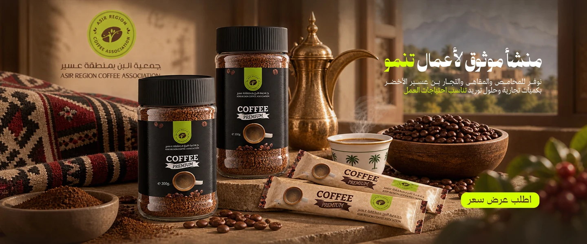
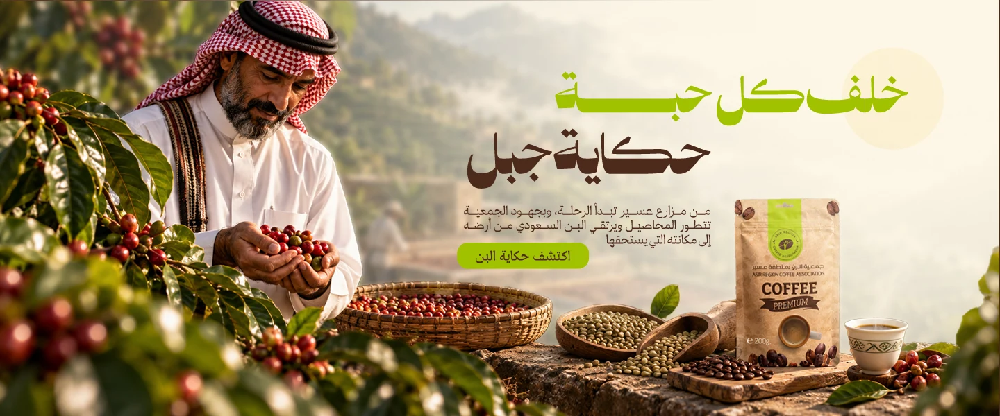
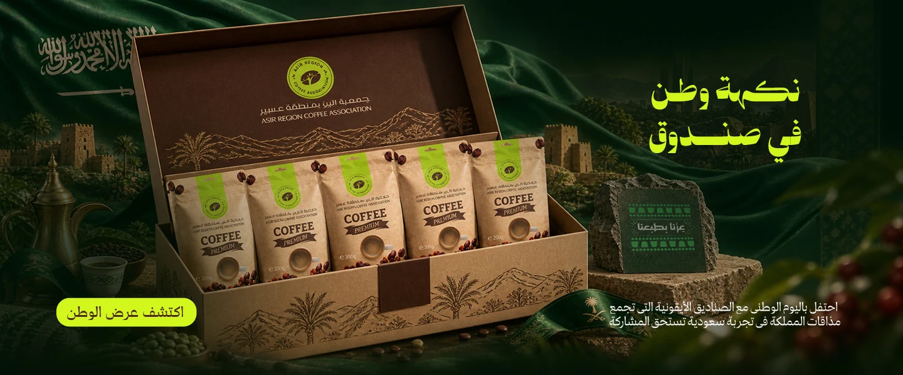
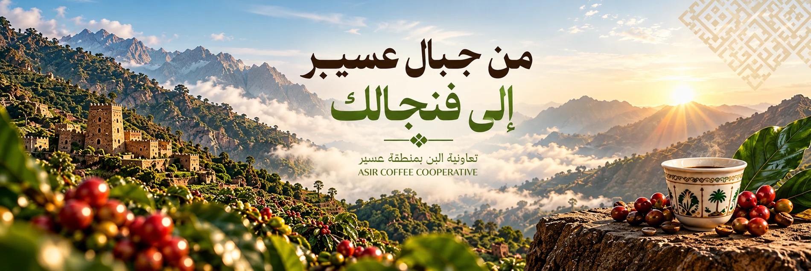

اختر البن
قهوة سعودية لجلسة الضيافة، أو مختصة للحظتك اليومية.


من أول حبّة… إلى آخر رشفة.
اختر قهوتك، وخَلّ الباقي على مزاجك.

صباح على مهل، جلسة مع من تحب، أو استراحة تخصّك أنت.
من المدرّجات الخضراء والجبال التي تعانق الغيم، تأتي حكاية البن في عسير. حكاية أرض، وعناية، وضيافة تجمع الناس.
نقدّم هنا تجربة لمتجر جمعية البن بمنطقة عسير؛ تجمع هوية المكان مع متعة اختيار القهوة، من العبوة إلى الفنجان.
تعرّف على تشكيلتنا
خطوات بسيطة تفتح للمذاق بابًا جديدًا.
قهوة سعودية لجلسة الضيافة، أو مختصة للحظتك اليومية.
اختر الحبوب الكاملة، أو درجة الطحن المناسبة لأداة تحضيرك.
احفظ البن محكم الإغلاق، واطحن ما تحتاجه قبل التحضير.

استكشف نموذج باقات البن للهدايا وقطاع الأعمال.
إجابات تخلّي اختيارك أسهل.
هذه نسخة تجريبية لعرض التصميم وتجربة التسوق. يمكنك إضافة المنتجات وإكمال طلب توضيحي، ولا يتم تحصيل أموال أو شحن أي منتجات.
اختر حبوبًا كاملة إذا كانت لديك مطحنة. للتحضير بالفلتر اختر طحن الفلتر، وللدلة اختر طحن القهوة السعودية. الخيارات المعروضة للتجربة ويمكن تعديلها في النسخة الفعلية.
لا. الصور من الملفات المرفقة ودليل الهوية، بينما الأسماء والأسعار والأوزان والأوصاف بيانات توضيحية للمتجر التجريبي.
تُحفظ السلة في متصفحك فقط. نموذج الطلب لا يرسل بياناتك إلى خادم، ولا يحفظ اسمك أو عنوانك. يمكنك تفريغ السلة في أي وقت.
